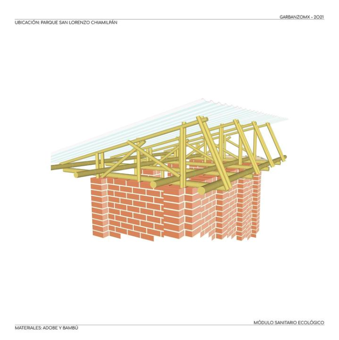

Proyecto Chiamilpán - Representación gráfica
Diseño y planificación de módulo sanitario ecológico. Ubicado dentro de Parque Chiamilpán, en el poblado de Chamilpa en Cuernavaca. Propuesto y construido con materiales naturales de la zona. Impartición de talleres sobre construcción con elementos naturales como el adobe y bahareque así como estructuras con bambú desde su corte y tratamiento hasta armado de estructura.
Proyecto Chiamilpán - Representación gráfica
Se propuso estructura de bambú para cubierta y para completar este sistema, se usaron láminas de prolipropileno reciclado .

Proyecto Chiamilpán - Representación gráfica
Taller de adobe
Impartido a estudiantes de diversas universidades de Cuernavaca.

Taller infantil de adobe
Enfocado a niños por parte de la UNESCO
Taller de adobe
Se habló sobre su importancia en la arquitectura y sus diversos usos.
Casa Toluzu
Vivienda estilo loft con estructura de acero y muros de piedra compuestos por gaviones.
Casa Toluzu
Ubicado en Toluca, Mx.
Liderazgo y planeación de proyecto.
Proyecto Chiamilpán

{kind=link}
{kind=link}
{kind=link}
{kind=link}
{kind=link}
{kind=link}
{kind=link}
{kind=link}